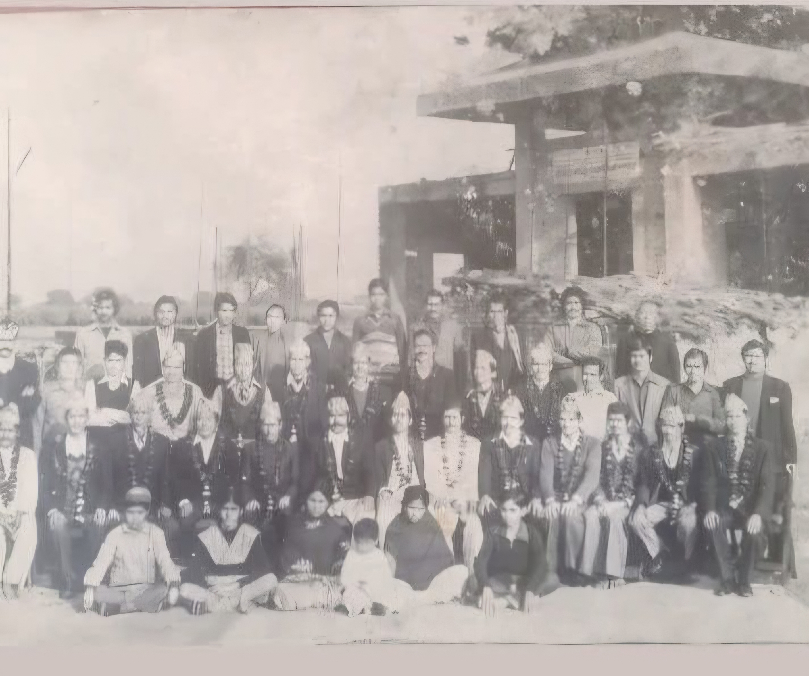
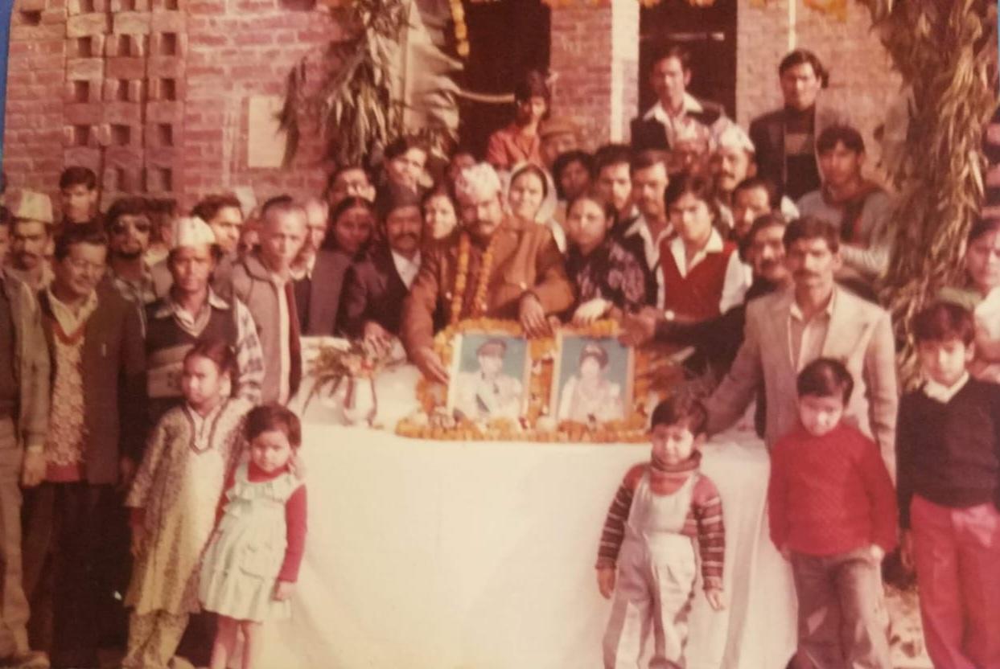
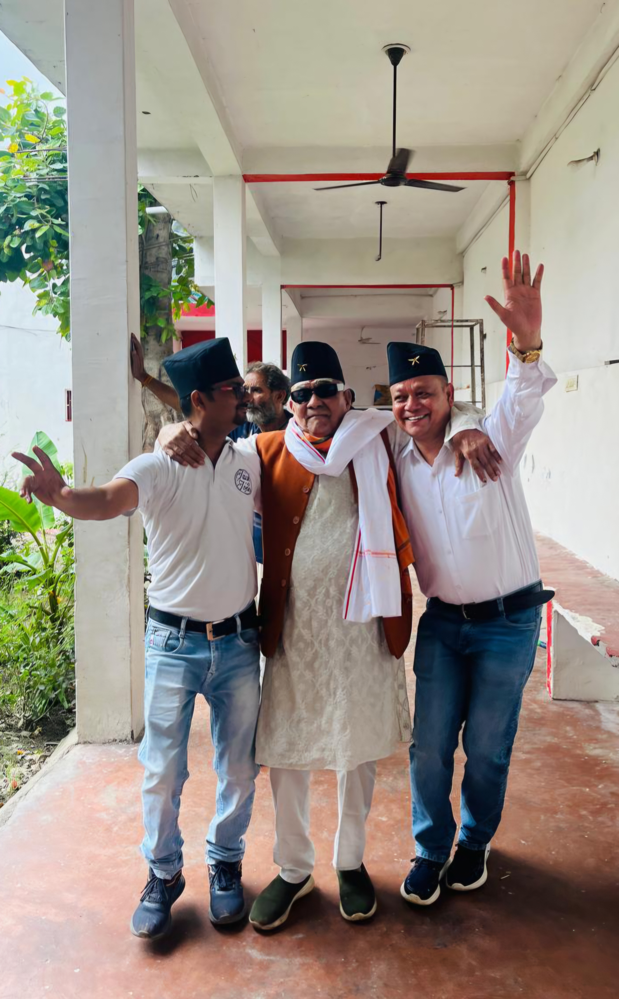
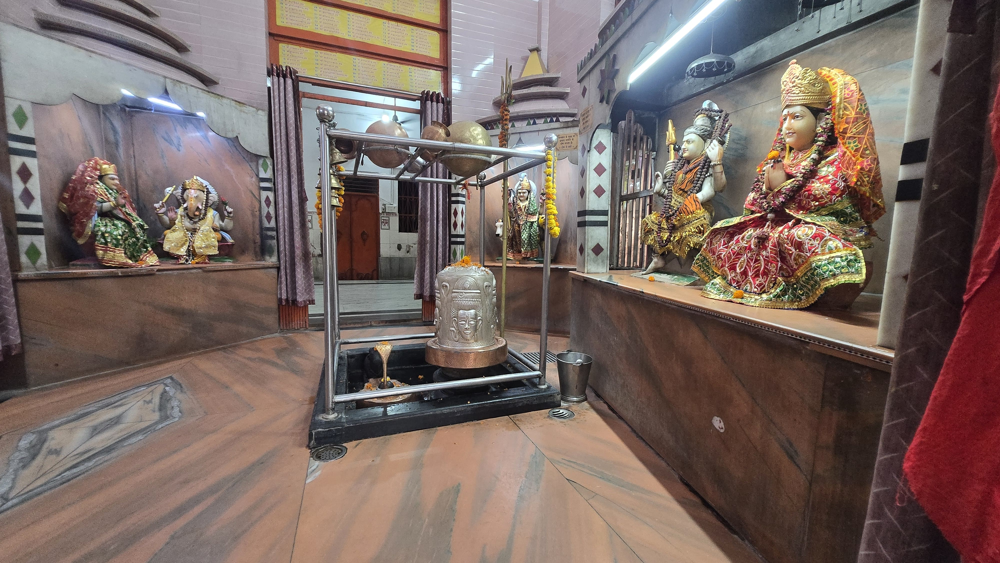

प्रारंभिक समय

पहला पड़ाव
मंदिर की शुरुआत
इस स्थान पर मंदिर/धर्मसमाज की शुरुआत, स्थान और प्रारंभिक दिनों की कहानी लिखें।
पुरानी तस्वीरों और स्मृतियों के माध्यम से उस यात्रा को संजोएँ, जिसके साथ हमारा मंदिर और धर्मसमाज धीरे-धीरे विकसित हुआ।
यात्रा देखें ↓हर पड़ाव हमारी सामूहिक आस्था, सेवा और मेहनत की कहानी कहता है।

इस स्थान पर मंदिर/धर्मसमाज की शुरुआत, स्थान और प्रारंभिक दिनों की कहानी लिखें।

मंदिर निर्माण, सहयोग देने वाले भक्तों और उस समय की महत्वपूर्ण घटनाओं का विवरण यहाँ रखें।

आरती, पूजा, भंडारा, सांस्कृतिक कार्यक्रम और समाज सेवा की पुरानी यादें यहाँ दिखाएँ।

आज का मंदिर, वर्तमान व्यवस्था और आने वाली पीढ़ियों के लिए हमारी विरासत को संजोने का संकल्प।
आपकी भेजी हुई तस्वीरों को वर्ष और घटना के अनुसार यहाँ सुंदर gallery में जोड़ा जा सकता है।